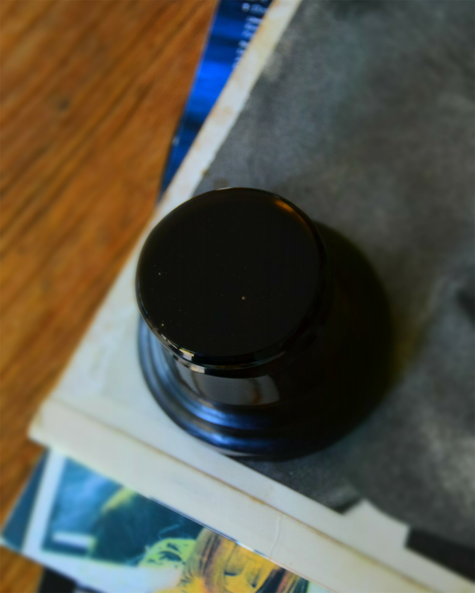
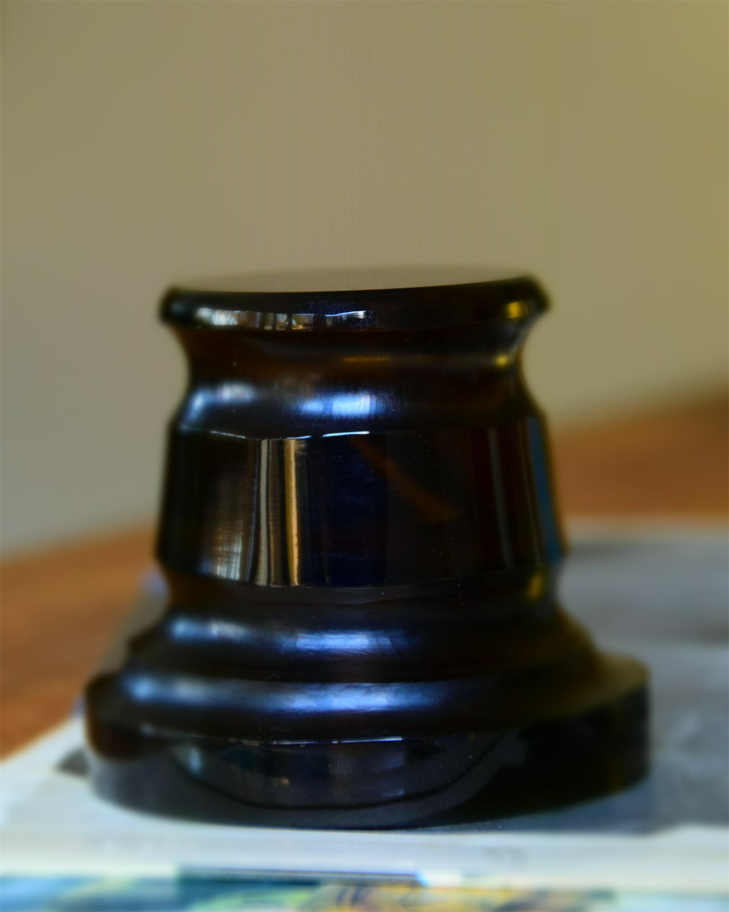
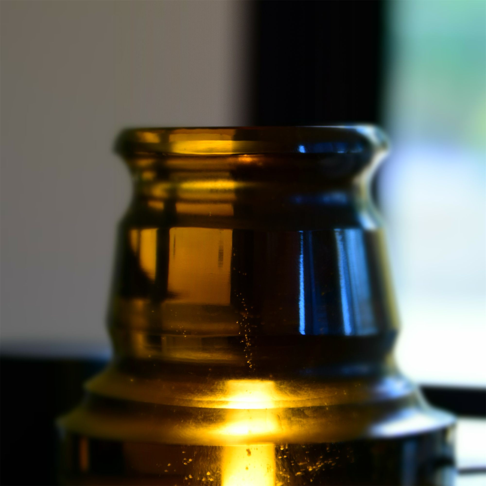
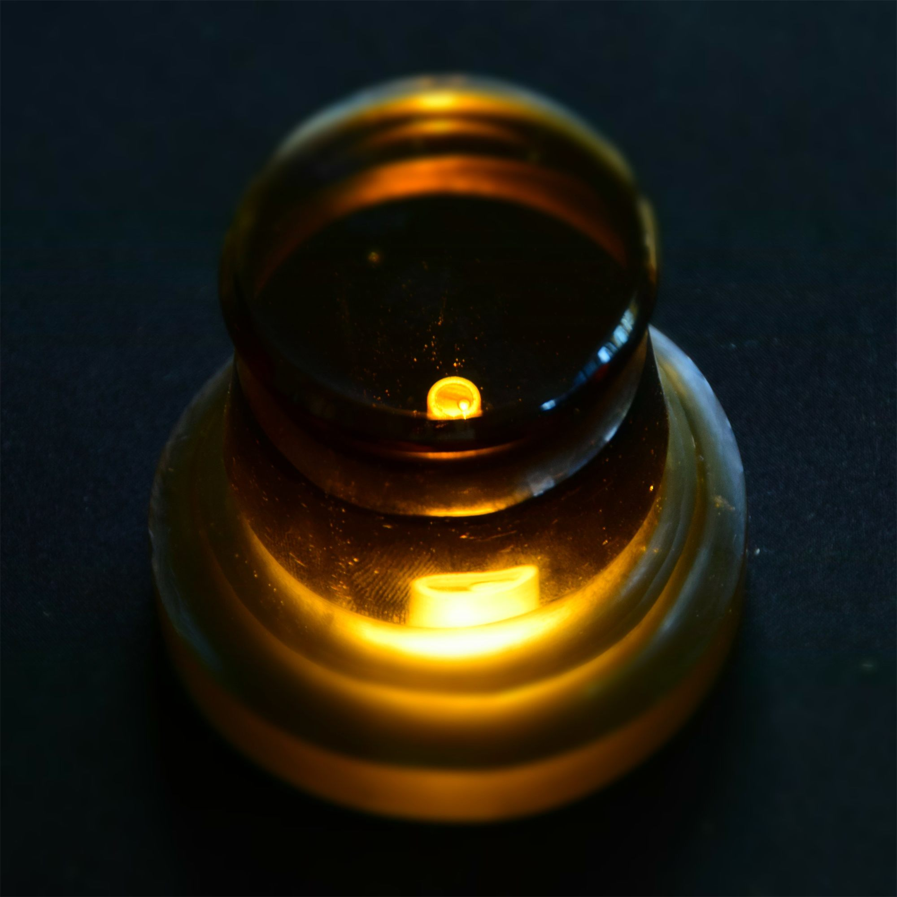
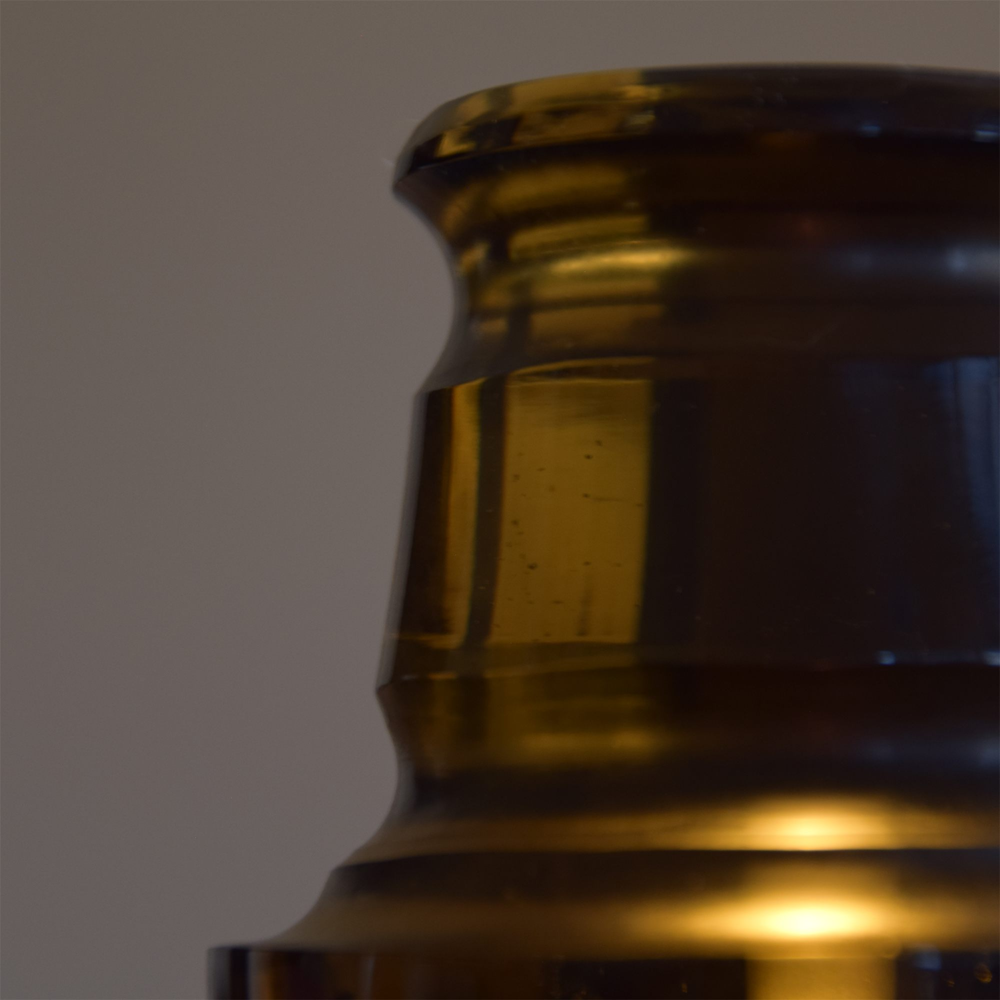

Adding a handcrafted piece to the ritual of vinyl enjoyment.
Part of the engagement with vinyl music is the deliberate actions that are taken to prepare and play the music. Carefully lowering a needle onto the grooves, or slowly turning the dial to the right position. The Vinyl Pendant is simply an addition to the ritual, something to accentuate the experience through a handcrafted piece that brings the motion of the vinyl into a functional display through the refraction of glass.


A design that seemed yet to be challenged was the vinyl weight. A simple addition that has existed for decades in the audiophile space that is used to improve the sound quality and consistency of your vinyl listening. Almost all designs that were found in research before the creation of the pendant had been lathed aluminium rings that sit upon your turntable; however, research in Prague showed an interesting approach to turntable building that used the equipment as an art piece as well as a functional device. This led to the creation of the Vinyl Pendant.
Access to the materials and learning how to use them is what generated the idea fully, rather than seeking out the materials for a weight. It was a design that would best illustrate the beauty of the materials.

Early sketches of what the vinyl pendant would look like varied but were limited by the dimensions and weight requirements for an effective vinyl weight. You need something that will apply the correct amount of pressure to a vinyl without damaging it, and it needs to be the correct size so as not to overlap the center and touch the grooves.
The making of the actual piece influenced a lot of the design choices, and cemented certain concepts that were up in the air during the ideation and development process. This was mainly a factor of the hardware and what you were able to achieve in a cold-workshop without breaking or chipping the glass.


One of the main challenges in production was keeping the object round and symmetrical. The design was only able to be manipulated and developed by removing material, not adding. So, any wrong move meant restarting or creating a symmetry of shape. For example, pushing slightly too hard would mean particular grooves were larger than others, so then you would need to continue that groove size all the way around the shape.
The handcrafted elements and slight imperfections in the symmetry are what make this piece feel authentic and real; unlike the machined weights you can buy on the market, this needs to be ground down attentively over hours and hours. Meaning every design hereafter will be unique in its own dimensions and shape.